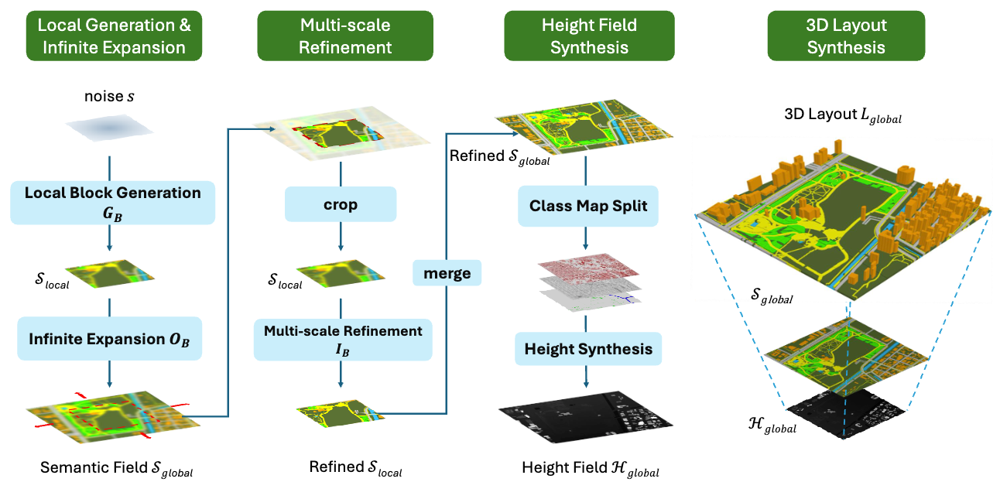
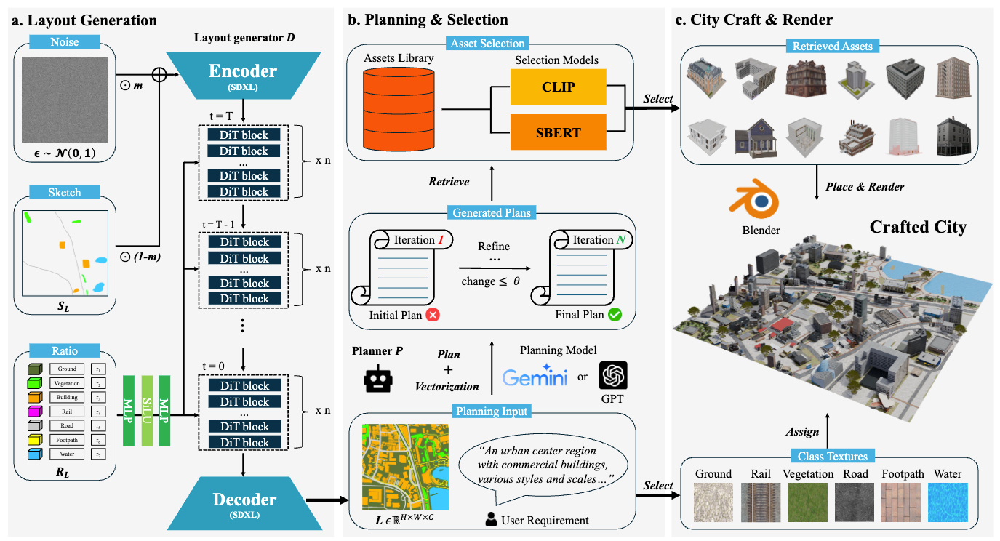
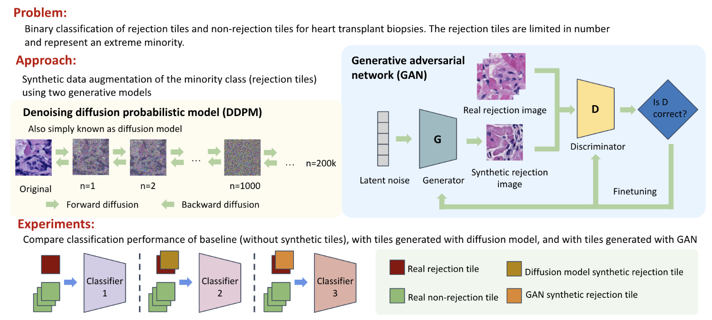

About
Experiences
Education
Selected Publications
* Equal contribution. ‡ Corresponding author.
Also see Google Scholar.

CityGen: Infinite and Controllable City Layout Generation

CityCraft: A Diffusion and LLM Powered Framework for Automatic Comprehensive Virtual City Generation

Rare Heart Transplant Rejection Classification Using Diffusion-based Synthetic Image Augmentation
Top